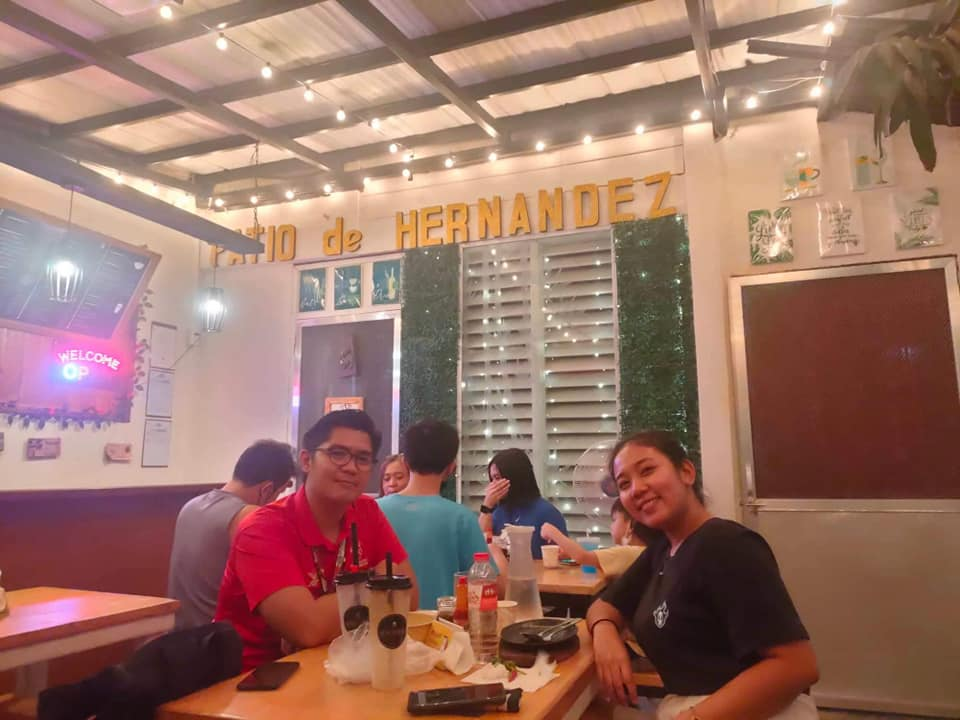
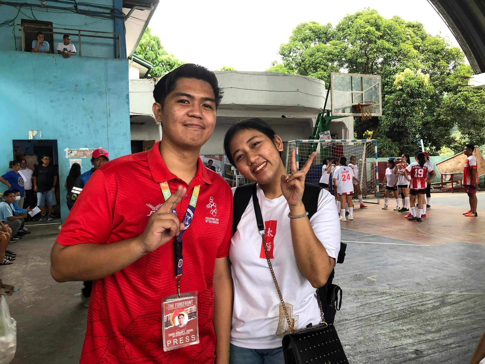

Thank you for being part of my 2022 journey!
I’ll make it short, and I admit medyo sad pa rin ako at the time of writing this article for you, pero I’ll try na hindi mahaluan ng lungkot ‘to since we’re celebrating new year, masaya dapat.
I would like to say na masaya pa rin ako na nakilala kita. Parang dati out of curiousity mo kung sino si Mr. IT Guy from GCR kaya ka nag-chat, hanggang sa umabot na ng 5:30AM yung conversation natin that time. But you have no idea na I already admire you before the event so that I took the opportunity.
I didn’t expect na magiging part ka ng buhay ko this year, mula noong sinamahan mo ako sa mismong birthday ko, sa mga ukay-ukay and food dates natin sa Mcdonalds, KFC, Ramen and Samgyup, sa mga gabing magkasama tayong naglalakad mula seafront hanggang boardwalk, sa mga yakap mong mahigpit habang nasa tabing dagat, noong sinorpresa mo ako sa mismong futsal match ko sa Gordon Heights, super appreciated ko lahat.
 Salamat sa pakikinig sa lahat ng mga rants ko lalong-lalo na kapag nararamdaman ko na wala ako sa mood, or kapag naiinis ako, lagi kang nandyan para makinig. Salamat rin sa suporta lalo na kapag may oras na napanghihinaan ako ng loob, sa paniniwala sa kakayanan ko, sa kung ano man yung tanglay na hindi ko man nakikita sa sarili ko pero nakikita ng dalawang mata mo.
Salamat sa lahat. Ang dami ko pa talagang gustong sasabihin sa'yo pero siguro hanggang dito muna. Hindi ko rin ineexpect na hahantong tayo sa ganitong situation, hindi na maganda yung nangyari from November hanggang December just because of a hug, but I believe everything happens for a reason.
I'll continue to do normal things kahit medyo hirap pa. And don’t worry nandito lang ako palagi if may kailanganin ka.
Mag-iingat ka palagi.